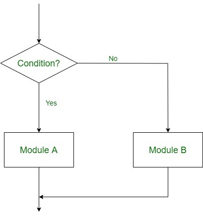

Selection Logic (Conditional Flow)
|

|
Selection Logic simply involves a number of conditions or parameters which decides one out of several written modules. The structures which use these type of logic are known as Conditional Structures. These structures can be of three types:
|
Single Alternative
if ($x==0) { // condition 1
echo $x; //instruction 1
}
Double Alternative
if ($x==0) { //condition 1
echo $x; //instruction 1
} else { //alternative 1
$x = $x * $x; //instruction 2
echo $x; //instruction 3
}
Multiple Alternatives
if ($x==0) { //condition 1
echo $x; //instruction 1
} else if($x>0) { //condition 2
$x = $x * $x; //instruction 2
echo $x; //instruction 3
} else { //alternative 1
$x = $x + $x; //instruction 4
echo $x; //instruction 5
}